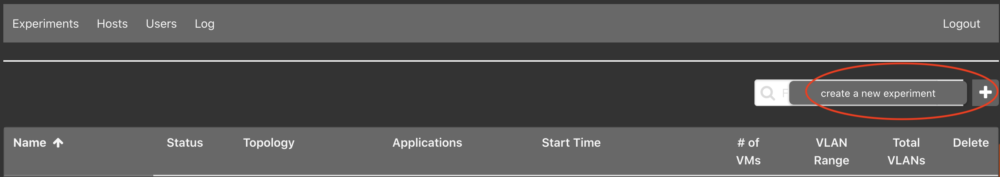
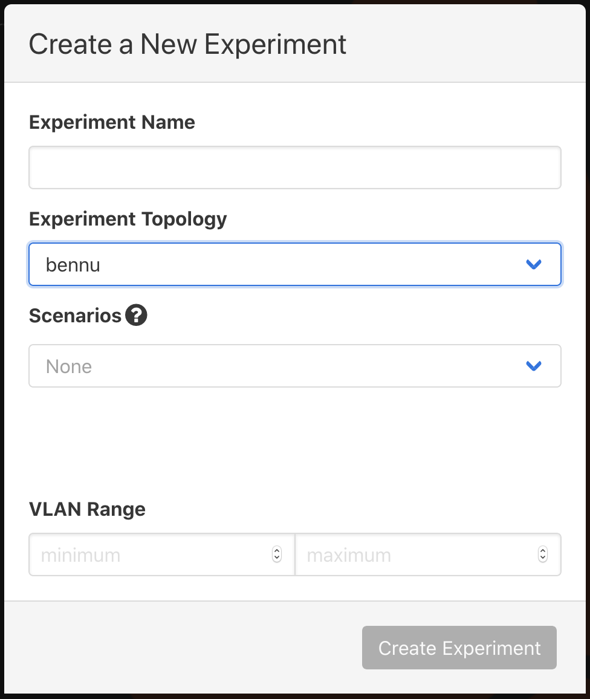
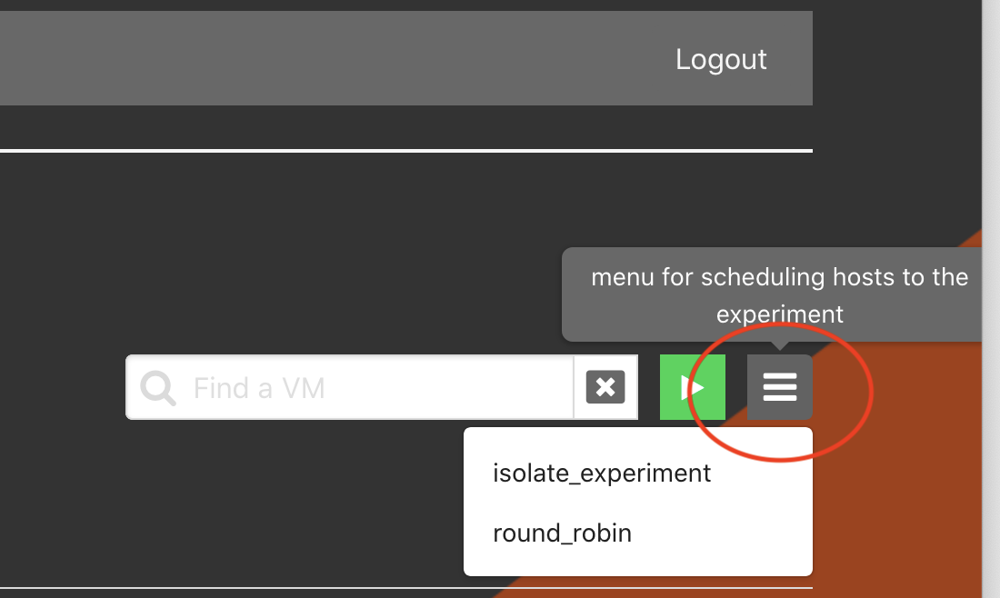

Experiments¶
Listing Experiments¶
From the Web-UI¶
Click on the Experiments tab. This will display all available experiments that
the user has access to view or edit.
From the Command Line Binary¶
This will display a list of all available experiments: it is run as a root
user.
Starting / Stopping Experiments¶
From the Web-UI¶
Clicking the stopped button will start the experiment; similarly the started
button will stop the experiment. A progress bar is used to update the progress
of starting an experiment. During the update to the experiment -- starting or
stopping -- it will not be accessible or available to delete.
From the Command Line Binary¶
Or ... Or ...Optionally, you can use the --dry-run flag to do everything except call out to
minimega.
The phenix exp --help command will output:
Experiment management
Usage:
phenix experiment [flags]
phenix experiment [command]
Aliases:
experiment, exp
Available Commands:
apps List of available apps to assign an experiment
create Create an experiment
delete Delete an experiment
edit Edit an experiment
list Display a table of available experiments
reconfigure Reconfigure an experiment
restart Restart an experiment
schedule Schedule an experiment
schedulers List of available schedulers to assign an experiment
scorch Start a Scorch run for experiment
start Start an experiment
stop Stop an experiment
trigger-running Trigger running stage for app(s) in experiment
Flags:
-h, --help help for experiment
Global Flags:
--base-dir.minimega string base minimega directory (default "/tmp/minimega")
--base-dir.phenix string base phenix directory (default "/phenix")
--bridge-mode string bridge naming mode for experiments ('auto' uses experiment name for bridge; 'manual' uses user-specified bridge name, or 'phenix' if not specified) (options: manual | auto)
--deploy-mode string deploy mode for minimega VMs (options: all | no-headnode | only-headnode)
--hostname-suffixes string hostname suffixes to strip (default "-minimega,-phenix")
--log.console string output for console logs (text format) (stderr, stdout, or file path) (default "stderr")
--log.level string level to log messages at (default "info")
--log.system.max-age int maximum number of days to retain old log files (default 90)
--log.system.max-backups int maximum number of old log files to retain (default 3)
--log.system.max-size int maximum size in megabytes of the log file before it gets rotated (default 100)
--log.system.path string path to system log (JSON format) (default "/var/log/phenix/phenix.log")
--store.endpoint string endpoint for storage service (default "bolt:///etc/phenix/store.bdb")
--unix-socket string phēnix unix socket to listen on (ui subcommand) or connect to (default "/tmp/phenix.sock")
--use-gre-mesh use GRE tunnels between mesh nodes for VLAN trunking
Use "phenix experiment [command] --help" for more information about a command.
Create a New Experiment¶
From the Web-UI¶

Click the + button to the right of the filter field.

Enter Experiment Name and Experiment Topology, the remaining selection are
optional. In this example, bennu is an example topology and is not included
by default. You will need to create your own topology(ies).
From the Command Line Binary¶
Three options are available from the command line. The only requirements are for an experiment and topology name; scenario and base directory are optional.
$> phenix experiment create <experiment name> -t <topology name>
$> phenix experiment create <experiment name> -t <topology name> -s <scenario name>
$> phenix experiment create <experiment name> -t <topology name> -s <scenario name> -d </path/to/dir/>`
The phenix exp create --help command will output:
Create an experiment
Used to create an experiment from an existing configuration; can be a
topology, or topology and scenario. (Optional are the arguments for scenario
or base directory.)
Usage:
phenix experiment create <experiment name> [flags]
Examples:
phenix experiment create <experiment name> -t <topology name>
phenix experiment create <experiment name> -t <topology name> -s <scenario name>
phenix experiment create <experiment name> -t <topology name> -s <scenario name> -d </path/to/dir/>
Flags:
-d, --base-dir string Base directory to use for experiment (optional)
-h, --help help for create
-s, --scenario string Name of an existing scenario to use (optional)
-t, --topology string Name of an existing topology to use
Global Flags:
--base-dir.minimega string base minimega directory (default "/tmp/minimega")
--base-dir.phenix string base phenix directory (default "/phenix")
--hostname-suffixes string hostname suffixes to strip
--log.error-file string log fatal errors to file (default "/root/.phenix.err")
--log.error-stderr log fatal errors to STDERR
--store.endpoint string endpoint for storage service (default "bolt:///root/.phenix.bdb")
Scheduling an Experiment¶
From Web-UI¶
The experiment must be stopped; click on the experiment name to enter the Stopped Experiment component. Click on the hamburger menu to the right of the filter field and start button to select a desired schedule.

From the Command Line Binary¶
The list of available schedules can be found by running the following command.
Then apply the desired schedule with the following command.